Melakukan Lebih Banyak dengan Word
Grafik SmartArt | Menerapkan dan Memodifikasi Gaya | Menggabungkan Surat
Grafik SmartArt (SmartArt Graphics)
SmartArt memungkinkan Anda untuk mengkomunikasikan informasi dengan grafik, bukan hanya menggunakan teks. Ada berbagai gaya untuk dipilih, yang dapat Anda gunakan untuk mengilustrasikan berbagai jenis ide.
Tonton video di bawah ini untuk mempelajari lebih lanjut tentang bekerja dengan SmartArt.
Untuk menyisipkan grafik SmartArt:
Tempatkan titik penyisipan dalam dokumen di mana Anda ingin grafik SmartArt muncul.
Dari tab Sisipkan, pilih perintah SmartArt di grup Ilustrasi.
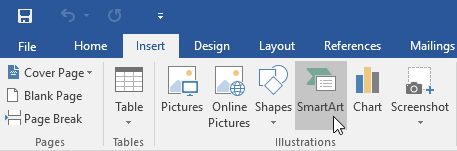
Sebuah kotak dialog akan muncul. Pilih kategori di sebelah kiri, pilih grafik SmartArt yang diinginkan, lalu klik OK.
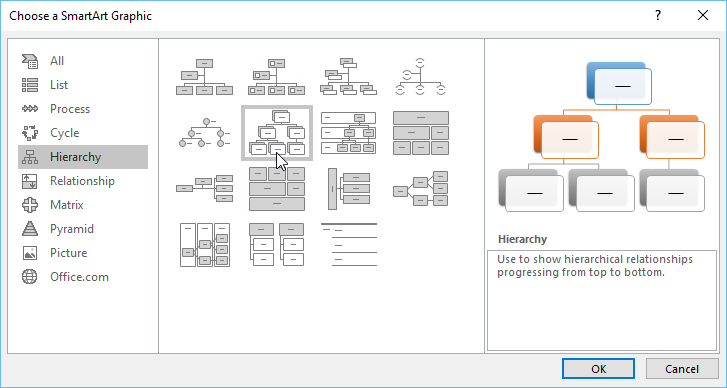
Grafik SmartArt akan muncul di dokumen Anda.
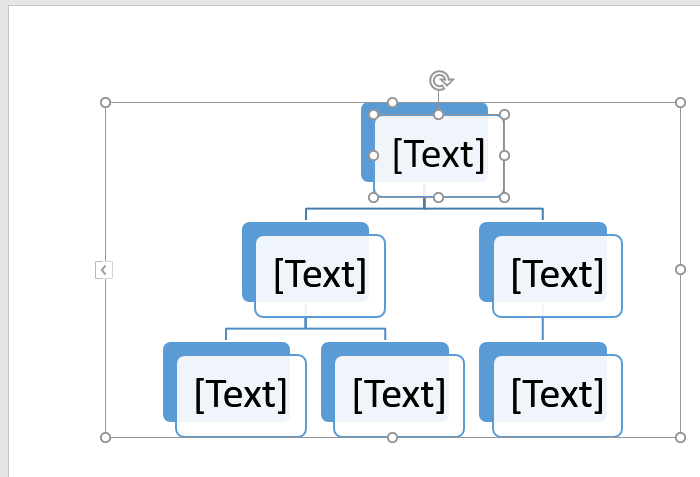
Untuk menambahkan teks ke grafik SmartArt:
Pilih grafik SmartArt. The panel teks akan muncul di sisi kiri. Jika tidak muncul, Anda dapat mengklik panah kecil di tepi kiri grafik.
Masukkan teks di sebelah setiap poin di panel teks. Teks akan muncul dalam bentuk yang sesuai. Ini akan diubah ukurannya secara otomatis agar pas di dalam bentuk.
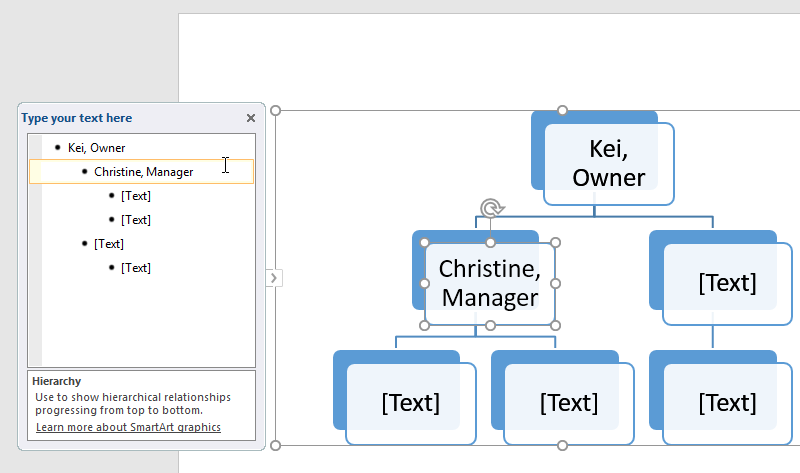
Anda juga dapat menambahkan teks dengan mengklik bentuk yang diinginkan lalu mengetik. Ini bekerja dengan baik jika Anda hanya perlu menambahkan teks ke beberapa bentuk. Namun, untuk grafik SmartArt yang lebih kompleks, bekerja di panel teks seringkali lebih cepat dan lebih mudah.
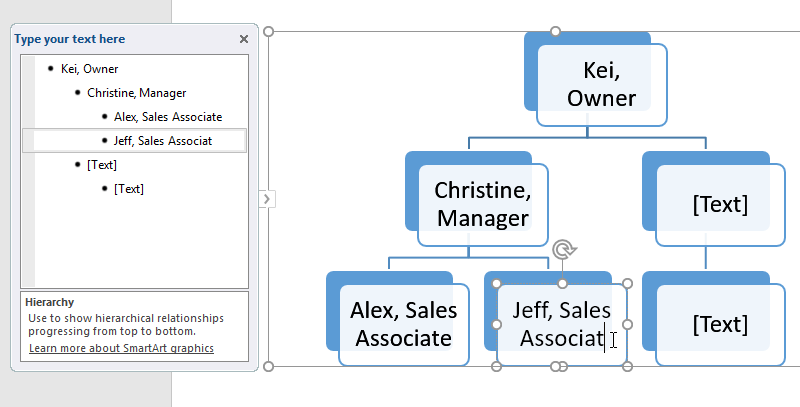
Untuk menyusun ulang, menambah, dan menghapus bentuk:
Sangat mudah untuk menambahkan bentuk baru, mengubah urutannya, dan bahkan menghapus bentuk dari grafik SmartArt Anda. Anda dapat melakukan semua ini di panel teks, dan ini sangat mirip dengan membuat kerangka dengan daftar bertingkat. Untuk informasi lebih lanjut tentang daftar bertingkat, Anda mungkin ingin meninjau pelajaran Daftar kami.
Untuk menurunkan bentuk, pilih poin yang diinginkan, lalu tekan tombol Tab. Peluru akan bergerak ke kanan, dan bentuknya akan turun satu tingkat.
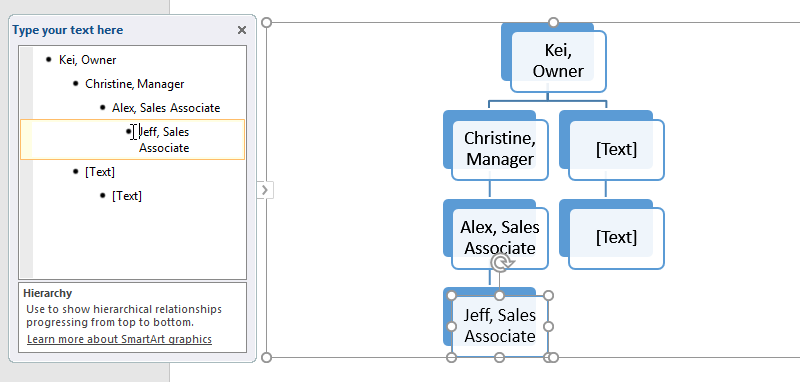
Untuk mempromosikan bentuk, pilih poin yang diinginkan, lalu tekan tombol Backspace (atau Shift+Tab ). Peluru akan bergerak ke kiri, dan bentuknya akan naik satu tingkat.
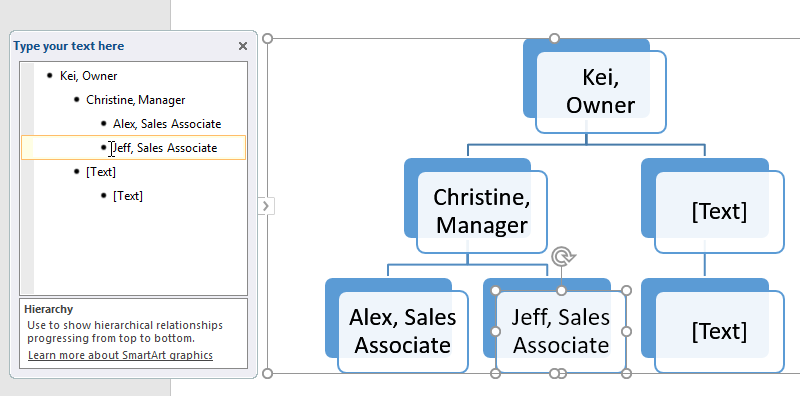
Untuk menambahkan bentuk baru, tempatkan titik penyisipan setelah poin yang diinginkan, lalu tekan Enter. Poin baru akan muncul di panel teks, dan bentuk baru akan muncul di grafik.
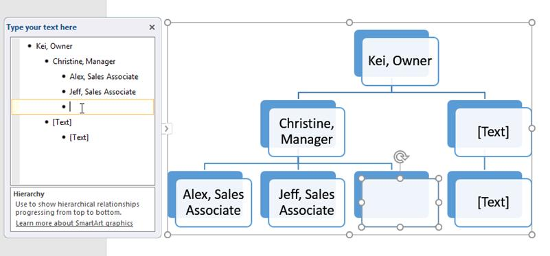
Untuk menghapus bentuk, terus tekan Backspace sampai poin dihapus. Bentuknya kemudian akan dihapus. Dalam contoh kita, kita akan menghapus semua bentuk tanpa teks.
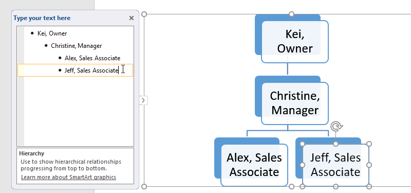
Mengatur SmartArt dari tab Desain
Jika Anda memilih untuk tidak menggunakan panel teks untuk menata SmartArt Anda, Anda bisa menggunakan perintah pada tab Desain di grup Buat Grafik. Cukup pilih bentuk yang ingin Anda ubah, lalu pilih perintah yang diinginkan.
Promosikan dan Turunkan : Gunakan perintah ini untuk memindahkan bentuk ke atas atau ke bawah di antara level.
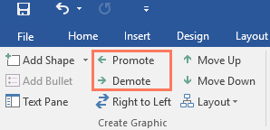
Move Up dan Move Down : Gunakan perintah ini untuk mengubah urutan bentuk pada level yang sama.
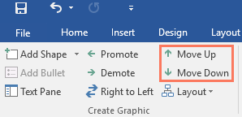
Add Shape : Gunakan perintah ini untuk menambahkan bentuk baru ke grafik Anda. Anda juga dapat mengeklik panah tarik-turun untuk opsi penempatan yang lebih tepat.
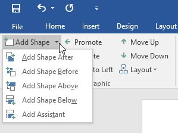
Dalam contoh kami, kami telah mengatur grafik dengan tata letak hierarkis. Tidak semua grafik SmartArt menggunakan jenis tata letak ini, jadi ingatlah bahwa perintah ini mungkin bekerja secara berbeda (atau tidak sama sekali) bergantung pada tata letak grafik Anda.
Menyesuaikan SmartArt
Setelah memasukkan SmartArt, ada beberapa hal yang mungkin ingin Anda ubah tentang tampilannya. Setiap kali Anda memilih grafik SmartArt, tab Desain dan Format akan muncul di sisi kanan Pita. Dari sana, mudah untuk mengedit gaya dan tata letak grafik SmartArt.
Ada beberapa gaya SmartArt, yang memungkinkan Anda dengan cepat mengubah tampilan dan nuansa SmartArt Anda. Untuk mengubah gaya, pilih gaya yang diinginkan dari grup gaya SmartArt.
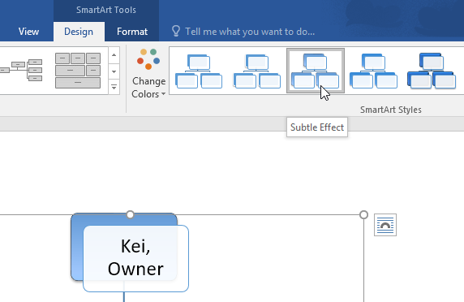
Anda memiliki berbagai skema warna untuk digunakan dengan SmartArt. Untuk mengubah warna, klik perintah Change Colors dan pilih opsi yang diinginkan dari menu drop-down.
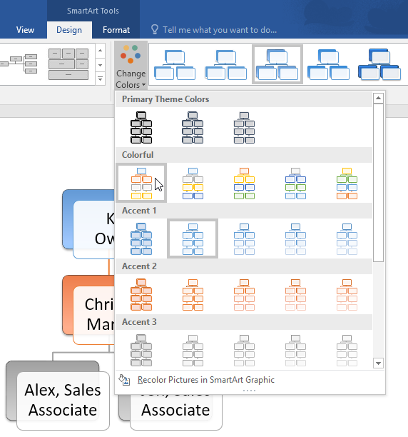
Anda juga dapat menyesuaikan setiap bentuk secara mandiri. Cukup pilih bentuk apa pun di grafik, lalu pilih opsi yang diinginkan dari tab Format.

Untuk mengubah tata letak SmartArt:
Jika Anda tidak menyukai cara informasi Anda diatur dalam grafik SmartArt, Anda selalu dapat mengubah tata letaknya agar lebih pas dengan konten Anda.
Dari Desain tab, klik Lebih panah drop-down pada kelompok Layouts.
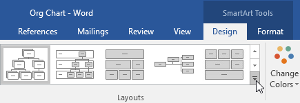
Pilih tata letak yang diinginkan, atau klik Tata Letak Lainnya untuk melihat lebih banyak opsi.
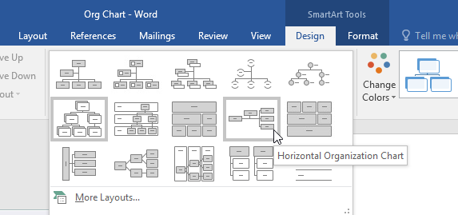
Tata letak yang dipilih akan muncul.

Jika tata letak baru terlalu berbeda dari aslinya, beberapa teks Anda mungkin tidak muncul. Sebelum memutuskan tata letak baru, periksa dengan cermat untuk memastikan tidak ada informasi penting yang hilang.
Tantangan!
Buka dokumen kosong.
Sisipkan grafik SmartArt Siklus Dasar dari kategori Siklus.
Masukkan teks berikut dalam urutan searah jarum jam: Kondensasi, Evaporasi, Infiltrasi, Presipitasi, Koleksi.
Hapus bentuk yang mengandung kata Infiltrasi.
Pilih bentuk yang mengandung Penguapan, dan klik Move Bawah perintah dua kali untuk memindahkan bentuk antara Collection dan Kondensasi.
Ubah Tata Letak SmartArt ke Blokir Siklus.
Ubah warna SmartArt ke rentang pilihan Anda.
Ubah Gaya SmartArt menjadi Efek Intens.
Setelah selesai, SmartArt Anda akan terlihat seperti ini:
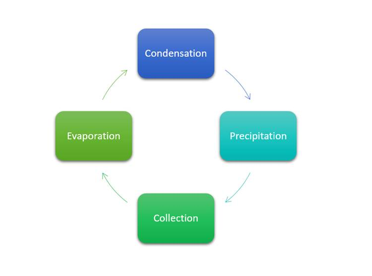
Menerapkan dan Memodifikasi Gaya (Applying and Modifying Styles)
Sebuah gaya adalah kombinasi yang telah ditetapkan gaya font, warna, dan ukuran yang dapat diterapkan untuk teks dalam dokumen Anda. Gaya dapat membantu dokumen Anda mencapai tampilan dan nuansa yang lebih profesional. Anda juga dapat menggunakan gaya untuk dengan cepat mengubah beberapa hal dalam dokumen Anda secara bersamaan.
Untuk menerapkan gaya:
Pilih teks yang ingin Anda format, atau tempatkan kursor Anda di awal baris.
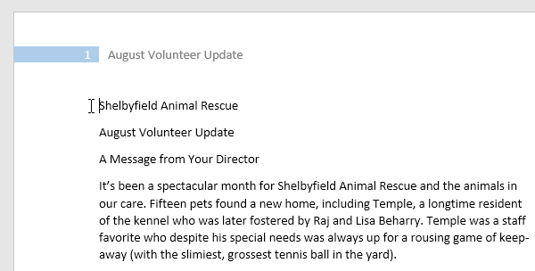
Dalam Styles kelompok pada Rumah tab, klik Lebih panah drop-down.
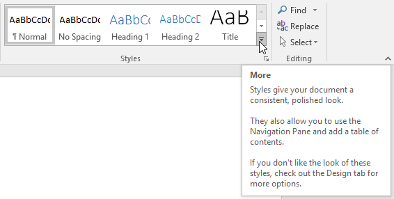
Pilih gaya yang diinginkan dari menu tarik-turun.
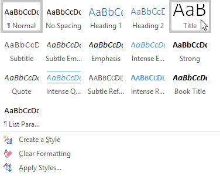
Teks akan muncul dalam gaya yang dipilih.
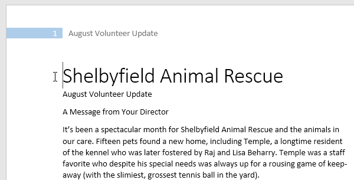
Untuk menerapkan kumpulan gaya:
Kumpulan gaya mencakup kombinasi gaya judul, judul, dan paragraf. Kumpulan gaya memungkinkan Anda untuk memformat semua elemen dalam dokumen Anda sekaligus alih-alih memodifikasi setiap elemen secara terpisah.
Dari Desain tab, klik Lebih panah drop-down di Dokumen Formatting kelompok.
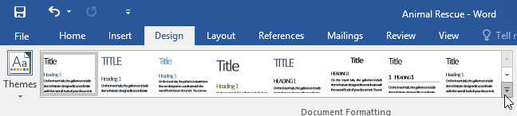
Pilih gaya yang diinginkan dari menu drop-down.

Kumpulan gaya yang dipilih akan diterapkan ke seluruh dokumen Anda.
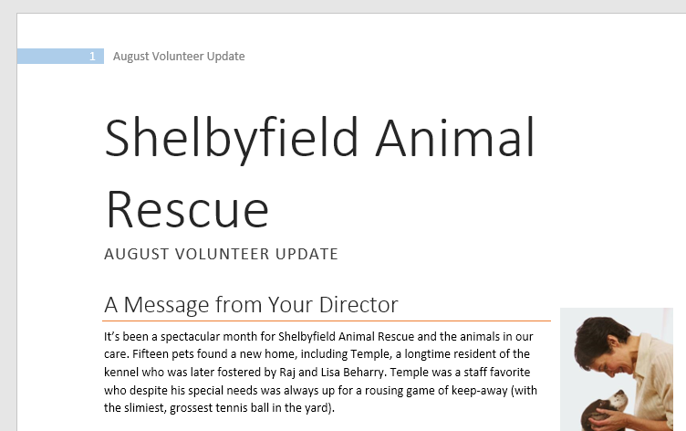
Untuk mengubah gaya:
Di grup Gaya pada tab Beranda, klik kanan gaya yang ingin Anda ubah dan pilih Ubah dari menu tarik-turun.
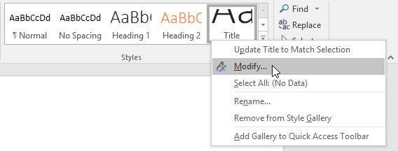
Sebuah kotak dialog akan muncul. Buat perubahan pemformatan yang diinginkan, seperti gaya font, ukuran, dan warna. Jika mau, Anda juga dapat mengubah nama gaya. Klik OK untuk menyimpan perubahan Anda.
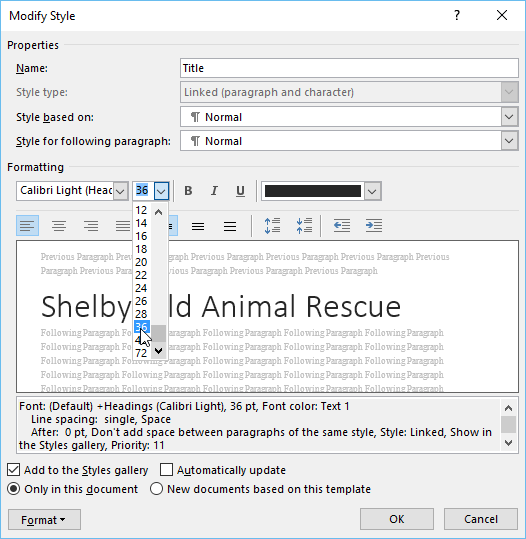
Gaya akan diubah.
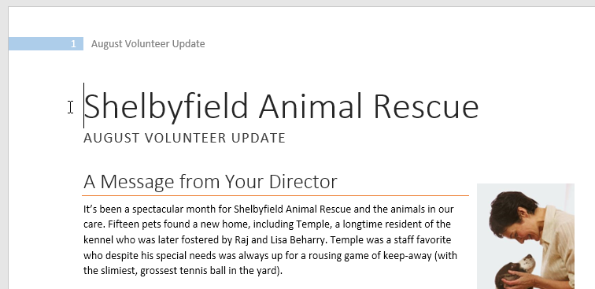
Saat Anda mengubah gaya, Anda mengubah setiap contoh gaya itu dalam dokumen. Pada contoh di bawah, kami telah memodifikasi gaya Normal untuk menggunakan ukuran font yang lebih besar. Karena kedua paragraf menggunakan gaya Normal, mereka telah diperbarui secara otomatis untuk menggunakan ukuran baru.
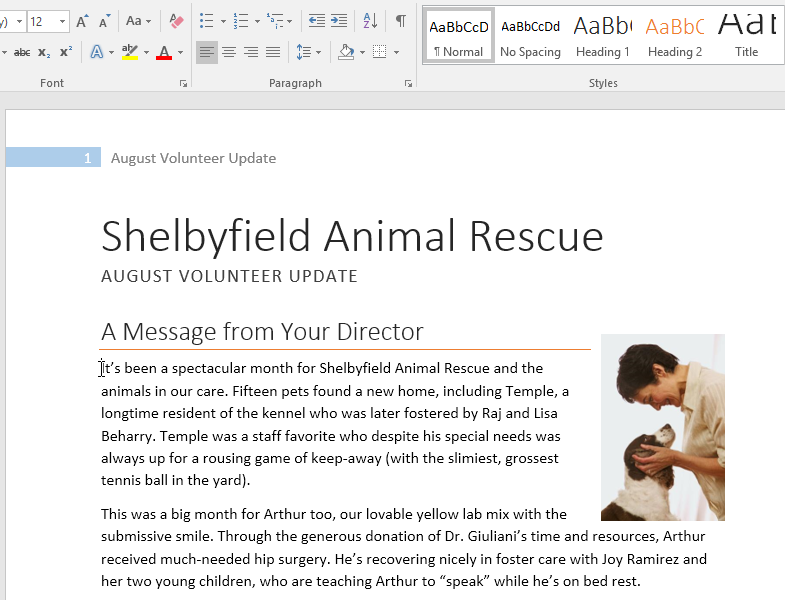
Untuk membuat gaya baru:
Klik panah di sudut kanan bawah grup Gaya.
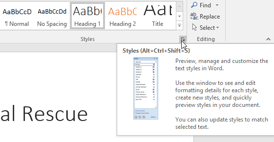
The Styles panel tugas akan muncul. Pilih tombol Gaya Baru di bagian bawah panel tugas.
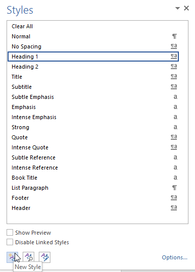
Sebuah kotak dialog akan muncul. Masukkan nama gaya, pilih pemformatan teks yang diinginkan, lalu klik OK.
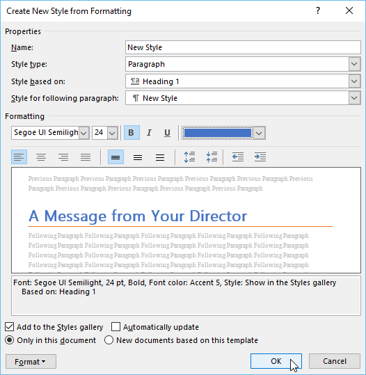
Gaya baru akan diterapkan ke teks yang dipilih saat ini. Itu juga akan muncul di grup Styles.
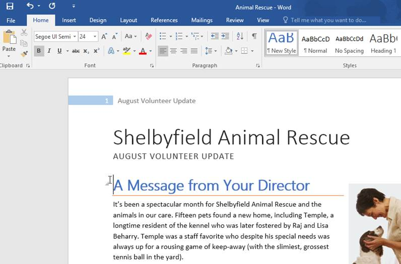
Anda juga dapat menggunakan gaya untuk membuat daftar isi untuk dokumen Anda. Untuk mempelajari caranya, tinjau artikel kami tentang Cara Membuat Daftar Isi di Microsoft Word.
Tantangan!
Buka dokumen latihan kami. Jika Anda sudah mengunduh dokumen latihan kami, pastikan untuk mengunduh salinan baru dengan mengeklik tautan lagi.
Pada halaman 1, pilih baris pertama teks Shelbyfield Animal Rescue dan ubah gayanya menjadi Title.
Pilih baris kedua yang bertuliskan August Volunteer Update dan ubah gayanya menjadi Heading 1.
Pilih baris ketiga yang bertuliskan A Message From Your Director dan ubah style menjadi Heading 2.
Dalam Desain tab, mengubah s tyle set untuk Santai.
Memodifikasi yang normal gaya sehingga font adalah Cambria dan ukuran font 14 pt.
Setelah selesai, halaman pertama dokumen Anda akan terlihat seperti ini:
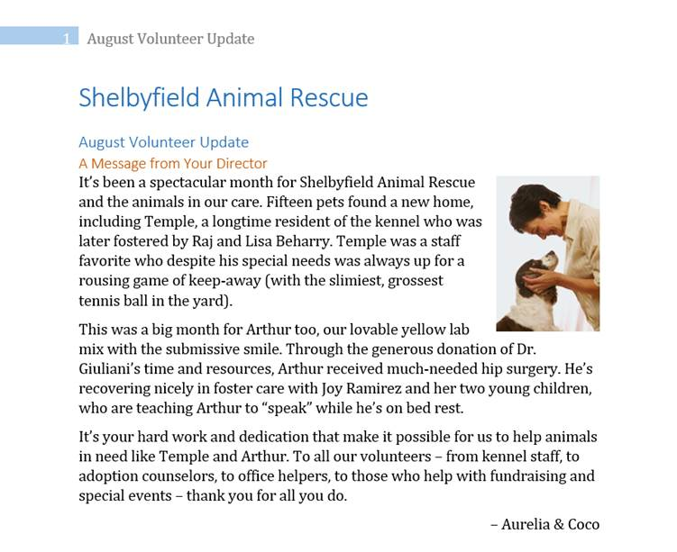
Opsional: Ubah gaya Heading 3 sesuka Anda. Anda dapat mengubah font, ukuran font, warna, dan lainnya. Judul ini muncul di seluruh dokumen, jadi cobalah untuk memilih pemformatan yang melengkapi teks isi.
Menggabungkan Surat (Mail Merge)
Mail Merge adalah alat yang berguna yang memungkinkan Anda menghasilkan banyak huruf, label, amplop, tag nama, dan lainnya menggunakan informasi yang disimpan dalam daftar, database, atau spreadsheet. Saat melakukan Gabungan Surat, Anda akan memerlukan dokumen Word (Anda dapat memulai dengan yang sudah ada atau membuat yang baru) dan daftar penerima, yang biasanya berupa buku kerja Excel.
Opsional: Jika Anda ingin mengerjakan pelajaran, Anda dapat mengunduh contoh di bawah.
unduh file Word unduh file Excel
Untuk menggunakan Gabungan Surat:
Buka dokumen Word yang sudah ada atau buat yang baru.
Dari tab Mailings, klik perintah Start Mail Merge dan pilih Step-by-Step Mail Merge Wizard dari menu drop-down.
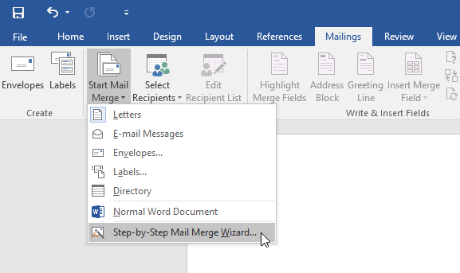
Panel Gabungan Surat akan muncul dan memandu Anda melalui enam langkah utama untuk menyelesaikan penggabungan. Contoh berikut menunjukkan cara membuat surat formulir dan menggabungkan surat dengan daftar penerima.
Langkah 1:
Dari panel tugas Gabungan Surat di sisi kanan jendela Word, pilih jenis dokumen yang ingin Anda buat. Dalam contoh kita, kita akan memilih Letters. Kemudian klik Next: Memulai dokumen untuk pindah ke Langkah 2.
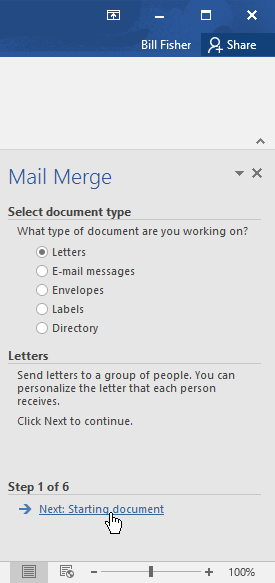
Langkah 2:
Pilih Gunakan dokumen saat ini, lalu klik Berikutnya: Pilih penerima untuk pindah ke Langkah 3.
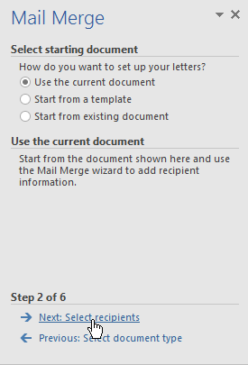
Langkah 3:
Sekarang Anda memerlukan daftar alamat sehingga Word dapat secara otomatis menempatkan setiap alamat ke dalam dokumen. Daftar bisa dalam file yang sudah ada, seperti buku kerja Excel, atau Anda bisa mengetikkan daftar alamat baru dari dalam Panduan Gabungan Surat.
Pilih Gunakan daftar yang ada, lalu klik Telusuri untuk memilih file.
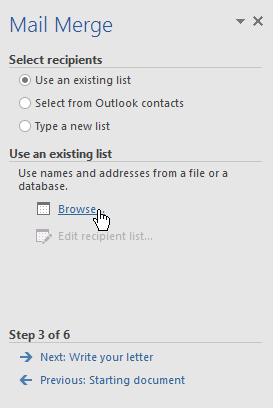
Temukan file Anda, lalu klik Buka.
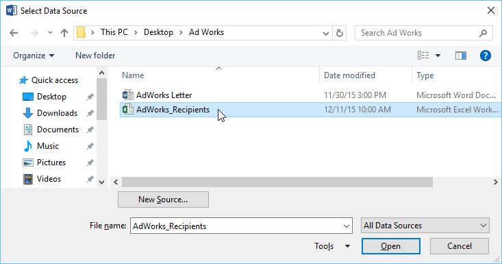
Jika daftar alamat ada dalam buku kerja Excel, pilih lembar kerja yang berisi daftar tersebut, lalu klik OK.
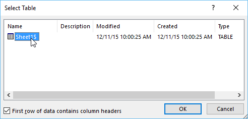
Dalam kotak dialog Penerima Gabungan Surat, Anda dapat mencentang atau menghapus centang setiap kotak untuk mengontrol penerima mana yang disertakan dalam gabungan. Secara default, semua penerima harus dipilih. Setelah selesai, klik OK.
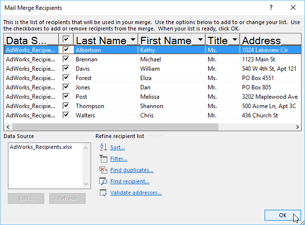
Klik Berikutnya: Tulis surat Anda untuk pindah ke Langkah 4.
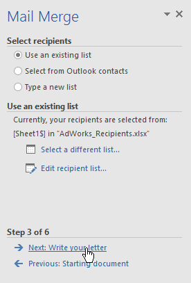
Jika Anda tidak memiliki daftar alamat yang ada, Anda dapat mengklik tombol Ketik daftar baru dan klik Buat, lalu ketikkan daftar alamat Anda secara manual.
Langkah 4:
Sekarang Anda siap untuk menulis surat Anda. Saat dicetak, setiap salinan surat pada dasarnya akan sama; hanya data penerima (seperti nama dan alamat ) yang akan berbeda. Anda harus menambahkan placeholder untuk data penerima sehingga Gabungan Surat tahu persis di mana harus menambahkan data.
Untuk memasukkan data penerima:
Tempatkan titik penyisipan di dokumen di mana Anda ingin informasi muncul.
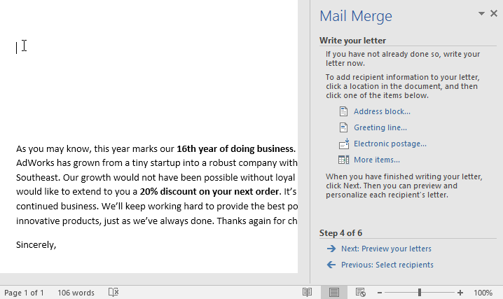
Pilih salah satu opsi placeholder. Dalam contoh kita, kita akan memilih Blok alamat.
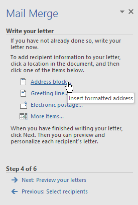
Tergantung pada pilihan Anda, kotak dialog mungkin muncul dengan berbagai opsi penyesuaian. Pilih opsi yang diinginkan, lalu klik OK.
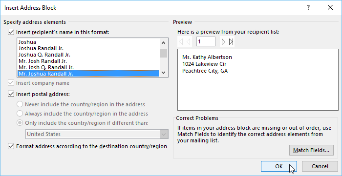
Placeholder akan muncul di dokumen Anda (misalnya, «AddressBlock» ).

Tambahkan placeholder lain yang Anda inginkan. Dalam contoh kita, kita akan menambahkan placeholder baris Greeting tepat di atas badan surat.
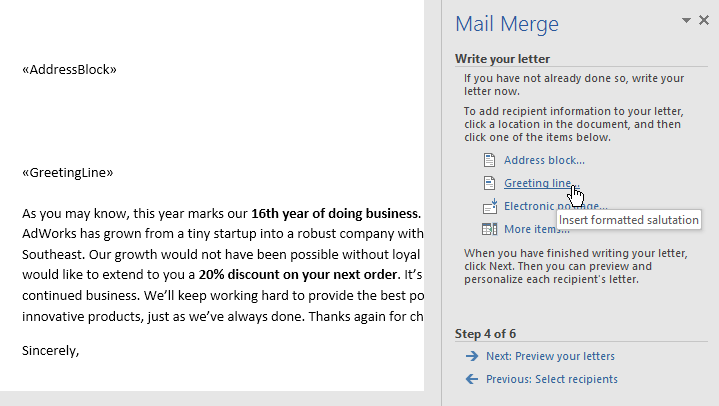
Setelah selesai, klik Berikutnya: Pratinjau surat Anda untuk pindah ke Langkah 5.
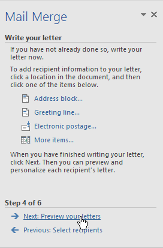
Untuk beberapa huruf, Anda hanya perlu menambahkan blok Alamat dan baris Ucapan. Tetapi Anda juga dapat menambahkan lebih banyak tempat penampung (seperti nama atau alamat penerima) di badan surat untuk mempersonalisasikannya lebih jauh.
Langkah 5:
Pratinjau surat untuk memastikan informasi dari daftar penerima muncul dengan benar dalam surat. Anda dapat menggunakan panah gulir kiri dan kanan untuk melihat setiap versi dokumen.
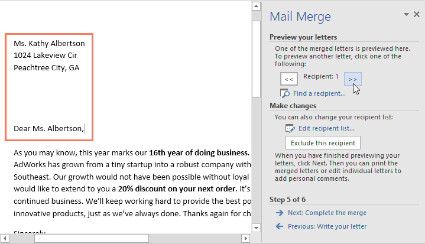
Jika semuanya terlihat benar, klik Berikutnya: Selesaikan penggabungan untuk pindah ke Langkah 6.
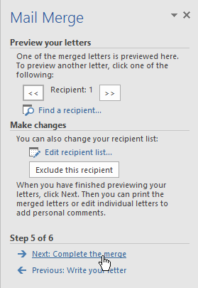
Langkah 6:
Klik Cetak untuk mencetak huruf.
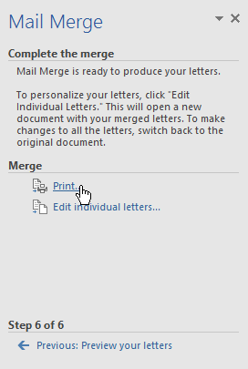
Sebuah kotak dialog akan muncul. Putuskan apakah Anda ingin mencetak Semua huruf, dokumen saat ini (rekaman), atau hanya grup pilihan, lalu klik OK. Sayan contoh kami, kami akan mencetak semua huruf.
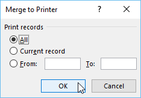
Kotak dialog Cetak akan muncul. Sesuaikan pengaturan cetak jika perlu, lalu klik OK. Surat-surat akan dicetak.
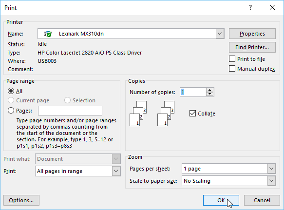
Tantangan!
Buka dokumen latihan kami dan daftar penerima latihan.
Gunakan Panduan Gabungan Surat untuk menggabungkan surat dengan daftar penerima.
Masukkan blok alamat di bagian atas dokumen. Pilih format kedua: Joshua Randall Jr.
Di atas badan surat, sisipkan Greeting Line. Format baris sapaan sehingga tertulis Mr. Randall,
Periksa surat Anda untuk memastikan formatnya benar. Surat ketiga Anda akan terlihat seperti ini:
Selesaikan penggabungan.